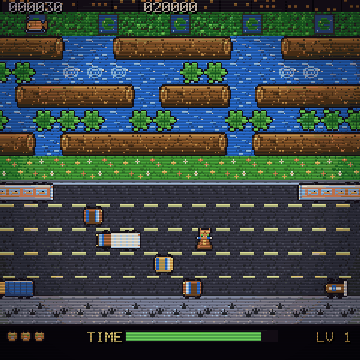
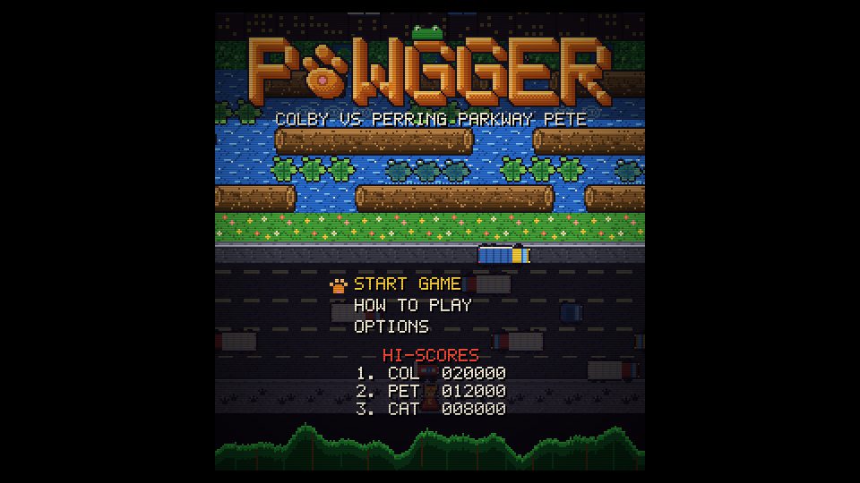
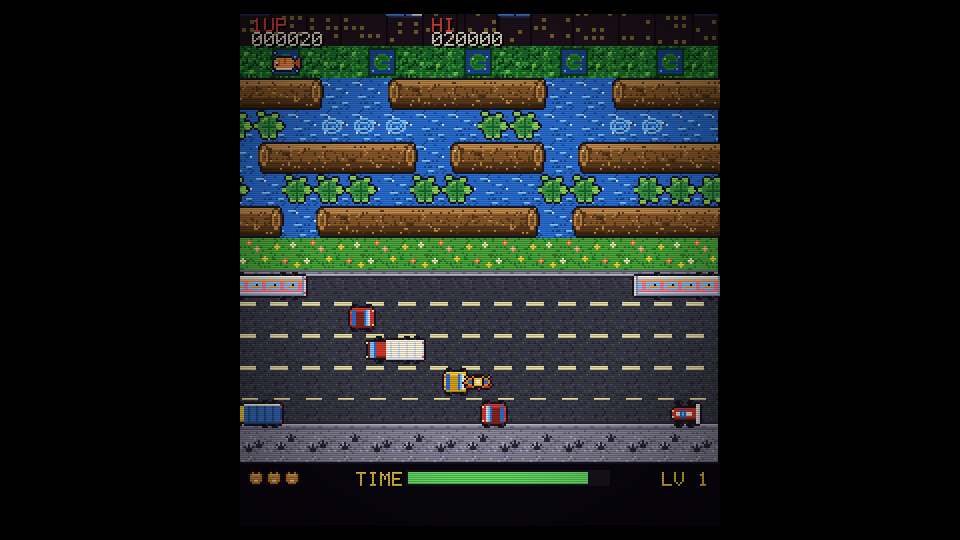

Colby (SuperColby)
An orange tabby in a blue shirt with a red and yellow C shield and an orange cape. Hops home, one square at a time.
A loving parody of Frogger (1981), in the KASEKRIEG universe
Hop SuperColby across Perring Parkway Pete's five-lane road, then across a jungle river of logs, turtles and crocodiles, into five home bays. Watch out for Pickles delivery trucks, a tuna-can bus, runaway cheese wheels and Pete's honking limo.

The whole game is one self-contained page. Nothing to install, no account, no assets to download.


Full rules and scoring are in HOW-TO-PLAY. The short version:
Space or Enter confirm · P pause · M mute · C CRT filter · F fullscreen · H help
An orange tabby in a blue shirt with a red and yellow C shield and an orange cape. Hops home, one square at a time.
A feral, vested rat with red eyes who owns the road. He throws cheese rollers across the median from level 3 and taunts you the whole way.
Pickles delivery trucks, a tuna-can bus, runaway cheese wheels and Pete's own limo, which honks.
Pawgger was built by a swarm of parallel AI agents, each owning one module. A single binding contract, ARCHITECTURE.md, defined the data shapes, the simulation API, the art and audio rules and who owned which file. Agents built against that contract, checked their own work by running it and looking at screenshots, and reported progress to a live tracker.
The how and why, with the mistakes included, is in HOW-IT-WAS-MADE.
PixBuf built from a locked 8-bit palette. No image files.dist/pawgger2.html is the whole game, with JS and CSS inlined.